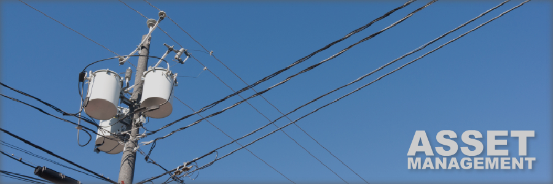

Asset Management
Utilities deploy and manage assets such as transformers, circuits, substations, pumping stations, and pipelines throughout their coverage area. The Nexgrid asset management allows utilities to monitor the usage, map locations, and see historical data of these deployed assets in order to provide consistent load management.
Service Quality
By monitoring assets through an easy to use interface the utility can improve the overall service provided to their customers. Understanding the load on assets such as transformers can provide critical information about how the electric network is performing.
Asset Forecasting
Forecasting growth areas and assets needed to support those areas is a critical issue that all utilities fact. Monitoring the load on the various system assets is a simple way to forecast future needs and allow for accurate needs projections.
Load Optimization
Tuning an electric network can provide millions in savings for an electric utility. Asset management provides key data points in order to tune the distribution of electricity to maintain quality while reducing overall costs.